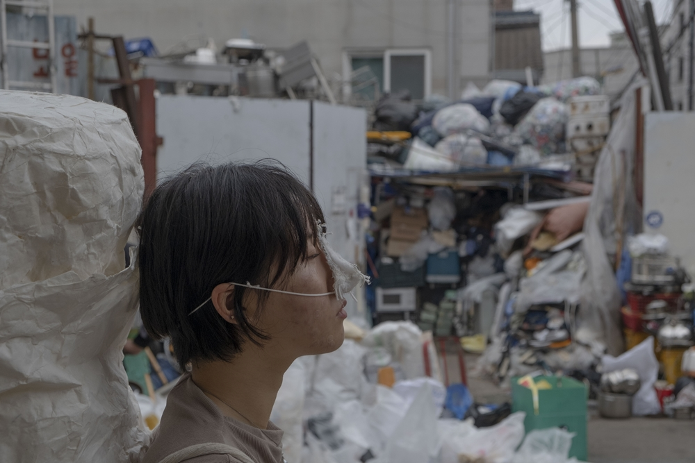
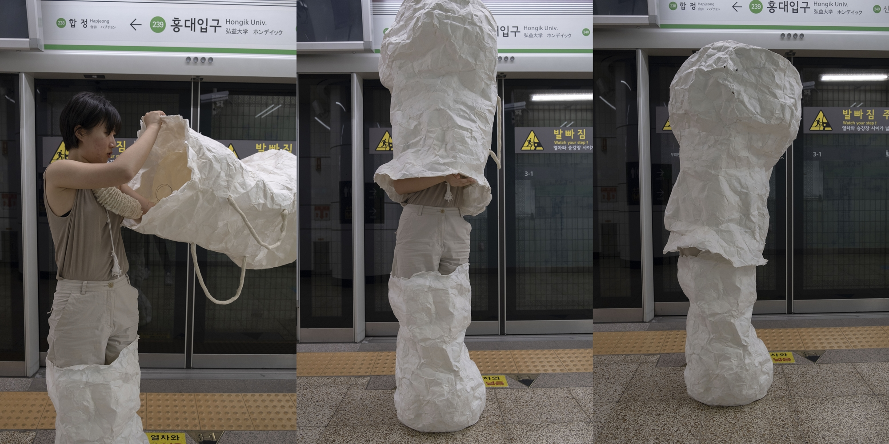
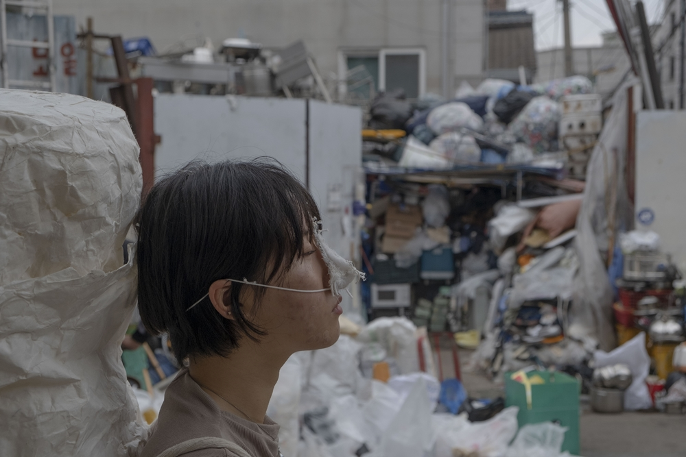
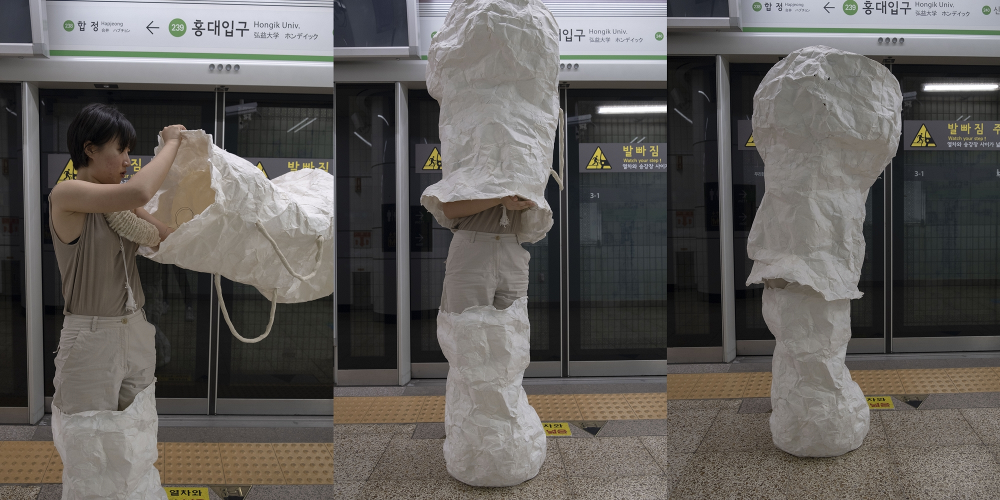

폐관, 라이브 퍼포먼스, 35'00", 2020.
냄새차단장치, 가변크기, 거즈면, 면 고무줄, 철사, 면사, 2019.
소리차단장치, 가변크기, 라텍스, 철사, 면사, 이어플러그, 2019.
이미지차단장치, 가변크기, 오간자천, 용수철, 실, 고무줄, 2019.
감각차단장치, 47×49×168cm, 종이, 밧줄, 2019
누구나 진공상태와 같이, 아무 일도 일어나지 않을 곳으로 도망치고 싶을 때가 있다. 그래서 나는 직면한 스트레스 상황으로부터 도망칠 수 있게끔, 자극의 통로를 차단하는 장치들을 만들었다.